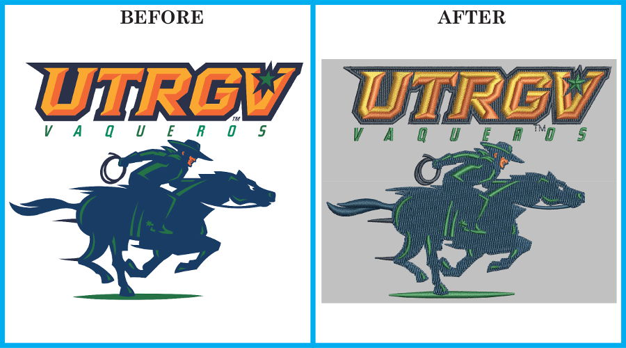
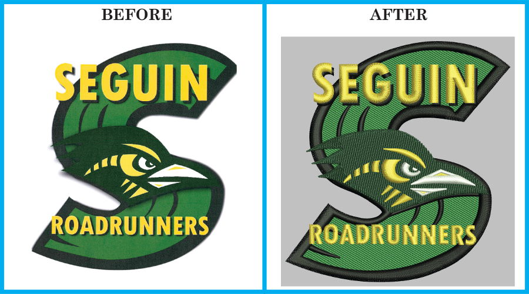
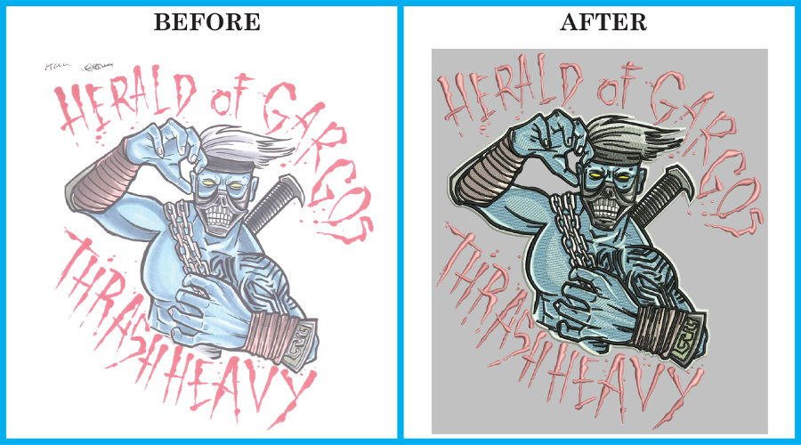

Digitizing Services
Precision • Quality • Professional Embroidery Output
Precision • Quality • Professional Embroidery Output
At Esteem Graphix, we specialize in high-quality embroidery
digitizing that transforms your artwork and scanned images
(.jpg, .png, .bmp, .tif) into precise, machine-ready embroidery
files such as .DST, .EMB, and other
industry-standard formats. Our experienced digitizers carefully analyze each
design to ensure optimal stitch flow, accurate thread density, and clean
detailing for smooth production.
We handle everything from simple lettering, namedrops, and logos to complex
designs including appliqué, 3D puff, chenille, sequins, and specialty embroidery
effects. Using advanced digitizing techniques and a variety of stitch types
such as satin stitch, run stitch, fill stitch, triple run, backstitch, motif,
and manual stitching, we enhance texture, depth, and durability to match the
fabric and end-use.Whether it’s logos, monograms, emblems, or custom artwork, every file is
digitized with precision and tested to deliver consistent, high-quality
embroidery results on garments, caps, bags, uniforms, and a wide range of
materials—helping you move confidently from design to production.




Optimized paths for smooth machine run and crisp output.
Minimal thread changes with maximum quality finish.
Expertise across all embroidery techniques.
Designs that make your customer’s jaw drop.
Tajima .dst, Melco Expanded (DOS) .exp, Melco Condensed (DOS) .cnd, Barudan FMC (Non-DOS), Barudan FDR (Non-DOS), Toyota .10o, Pfaff PCS .pcs, Pfaff PCD .pcd, Pfaff PCQ .pcq, Viking Husqvarna .hus, Viking Huskygram, Elna .sew, Janome .jef, All Brother Machines, Brother,.pec Compucon .xxx, Happy .tap, Happy (Non-DOS), ZSK (Non-DOS), Wilcom's *.EMB .emb For any other format, pls contact us and we will be only happy to extend our support....... With our designs your embroidery output will look awesome. Our work will make your customer’s jaw drop.
* Other formats available on requestWith our digitizing, your embroidery output will look exceptional and professional.
Contact Us